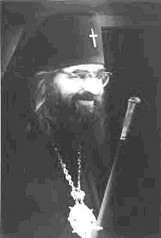

Shortly after the doctrine of Christ began to be propagated among the Gentiles, the followers of Christ in Antioch began to be called Christians (Acts XI:26). The word "Christian" indicated that those who bore this name belonged to Christ-belonged in the sense of devotion to Christ and his Doctrine. From Antioch the name of Christian was spread everywhere. The followers of Christ gladly called themselves by the name of their beloved Teacher and Lord; and the enemies of Christ called His followers Christians by carrying over to them the ill-will and hatred which they breathed against Christ.
However, quite soon there appeared people who, while calling themselves Christians, were not of Christ in spirit. Of them Christ had spoken earlier: Not everyone that saith unto Me, Lord, Lord shall enter into the Kingdom of Heaven; but he that doeth the will of My Father which is in heaven (St. Matt. VII:5). Christ prophesied also that many would pass themselves off for Christ Himself: Many shall come in my name, saying I am Christ (Matt. XXIV:5).
The Apostles in their epistles indicated that false bearers of the name of Christ had appeared already in their time: as ye have heard that Antichrist shall come, even now there are many antichrists (I John II:19). They indicated that those who stepped away from the doctrine of Christ should not be considered their own: They went out from us but were not of us (I John II:19).
Warning against quarrels and disagreements in minor matters (I Cor. I:10-14), at the same time the Apostles strictly commanded their disciples to shun those who do not bring the true doctrine (II John I:10). The Lord, through the Revelation given to the Apostle John the Theologian, sternly accused those who, calling themselves faithful, did not act in accordance with their name; for in such a case it would be false for them.
Of what use was it of old to call oneself a Jew, an Old Testament follower of the true faith, if one was not such in actuality? Such the Holy Scripture calls the synagogue of Satan (Apocalypse II:9). In the same way a Christian in the strict sense is he only who confesses the true doctrine of Christ and lives in accordance with it. The designation of a Christian consists in glorifying the Heavenly Father by one's life.
Let your light so shine before men, that they may see your good works, and glorify your Father which is in heaven (St. Matt. V:16). But true glorification of God is possible only if one rightly believes and expresses his right belief in words and deeds. Therefore true Christianity and it alone may be named "right-glorifying" (Ortho-doxy). By the word "Orthodoxy" we confess our firm conviction that it is precisely our Faith that is the true doctrine of Christ.
When we call anyone or anything Orthodox, we by this very fact indicate his or its non-counterfeit and uncorrupted Christianity, rejecting at the same time that which falsely appropriates the name of Christ.